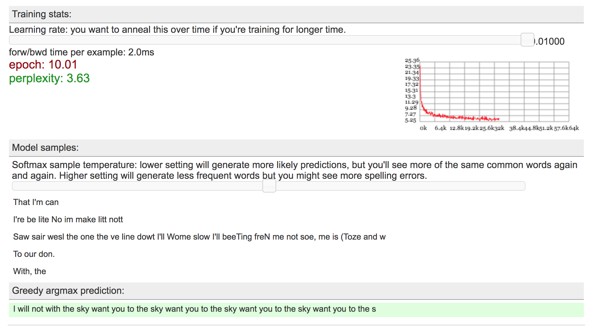
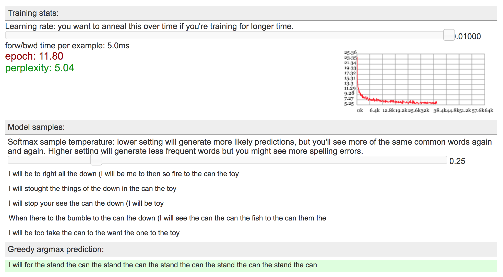
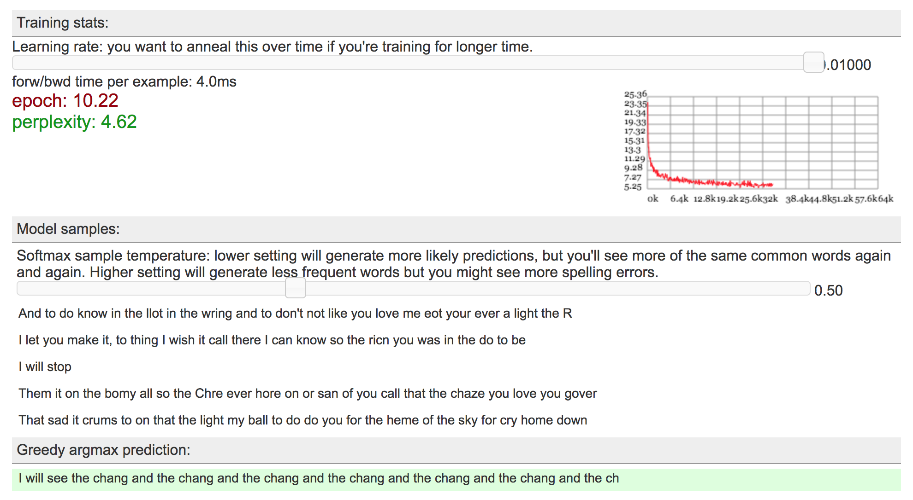
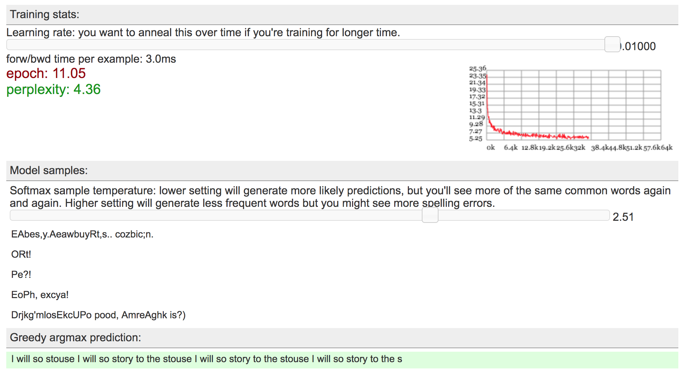
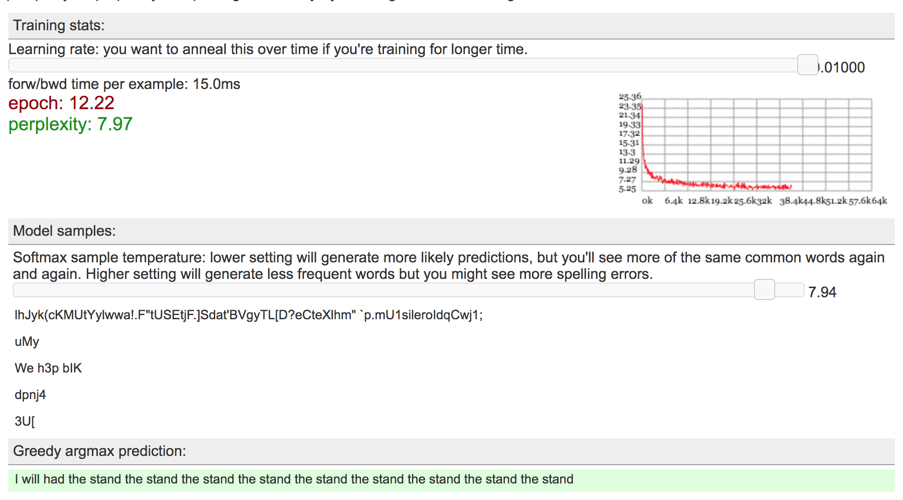
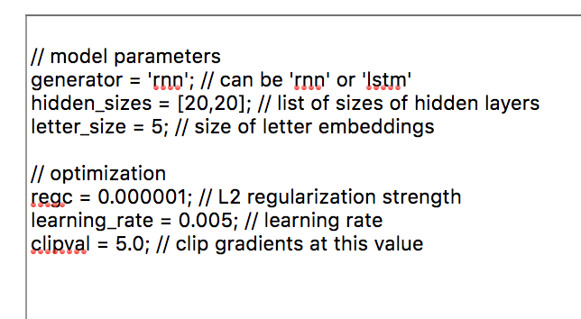
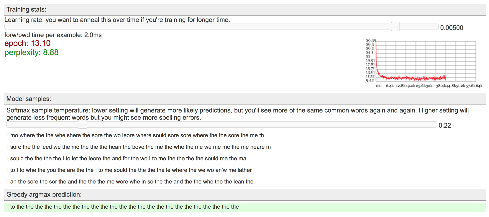
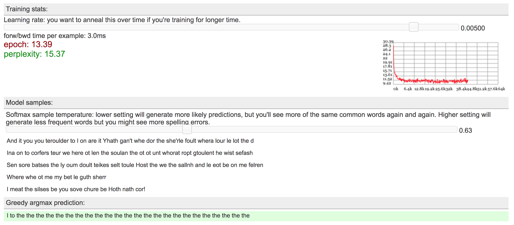
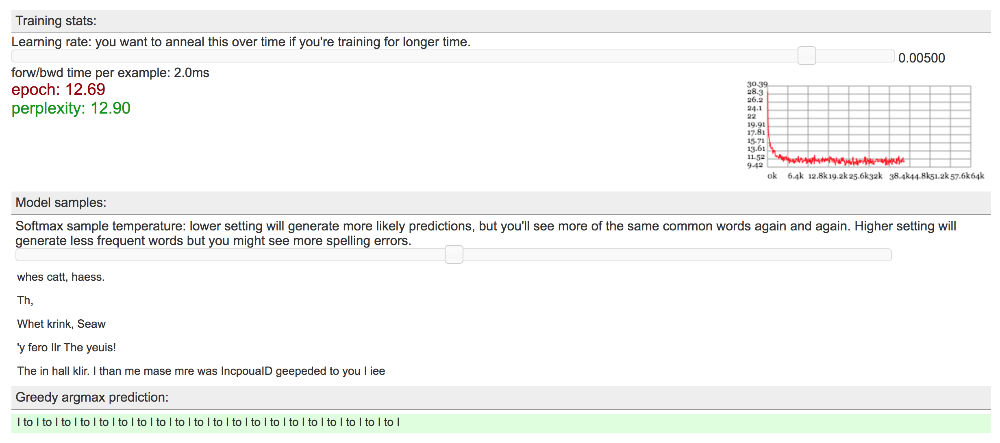

LSTMs consist of chained, repeating modules. At a high level, what are the two pieces of information that is passed between modules?
The information that between modules are past outputs and past states.
"LSTM" stands for "Long Short Term Memory". The name is a reference to a problem with RNNs that LSTMs are designed to solve.
What is this problem? At a high level, how do LSTMs attempt to address this problem (what extra information do they add)?
The problem is that RNNs cannot learn long term dependencies. LSTMs attempt to address this problem by remembering cell state.
The blog post describes two views of RNN/LSTM architectures. In one of these views, we think of the RNN as being "unrolled" into a chain of repeating modules.
What values (represented with tensors) are shared between these modules, and what values are different?
The values that are shared between these modules are the parameters. The values that are different betweent the modules are the cell states, intermediate inputs, and intermediate outputs.
Think about the ranges of the output - what is the property of sigmoid's output range that makes it work for our purpose when we multiply with the current state vector?
ReLU's output range is between 0 and infinity. We want to use sigmoid's output range because it's between 0 and 1, which means that 0 is forget all while 1 is remember all.
2) Run the model.
Run the model for 10 to 15 epochs, or until you see interesting results. Pause the model and record the perplexity. Perplexity is a measurement of how well
the model predicts a sample. A low perplexity indicates that the model is good at making predictions.

Try to find a temperature that produces the most natural seeming text, and give some examples of your generated sentence results.
Temperature = 0.25: Very repetitive words and sentence structure

Temperature = 0.5: Performed best in terms of less repetitive words and misspellings

Temperature = 2.51: No repetitve words, all mispellings

Temperature = 7.94: No repetitve words, all mispellings

Write down any observations about your generated sentence results. Does your text reflect properties of the input sources you used (i.e. vocabulary, sentence length)?
Yes, the input sources have short words and short sentence structures, just like most of the generated sentence results.
In temperature = 0.25, the generator couldn't close the parenthesis. Whenever "I Will" came up in the middle of the sentence, the "I" has a "(" in front of it.
In all argmax, the common theme is "I will".
Try changing the model parameters and initialization. Record your observations from at least one of these experiments.
Params: changed "LSTM" to "RNN" and decreased learning rate from "0.01" to "0.005"

Temperature = 0.22: Very repeatative

Temperature = 0.63: Many misspellings

Temperature = 1: Worse than "LSTM" + learning rate = "0.01" with little no correctly spelled words

3) Music Generation in Tensorflow.
Follow the steps outlined in the notebook. You need to fill out the lines marked #TODO with the appropriate code.
Once you are finished, upload your solution code file to your website in a way that would allow us to download and run it. Note: You may also need to install matplotlib if it has not already been installed.